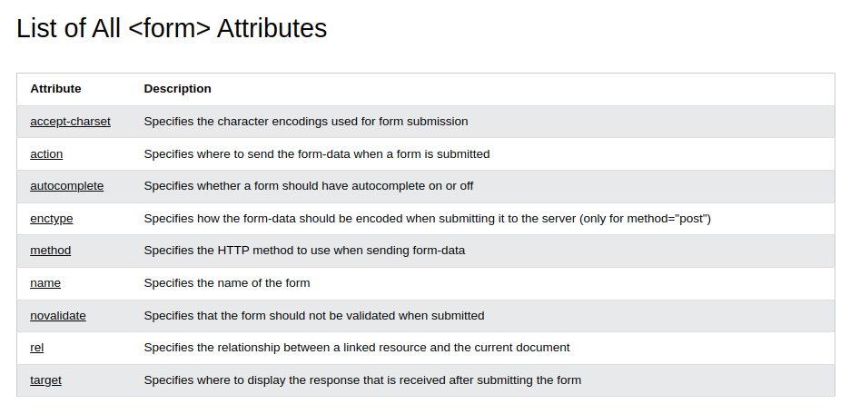

Forms attributes
Membahas tentang attributes yang bisa digunakan di tag <form>
Source
Action attribute
- Menentukan action yang akan dilakukan saat form disubmit
- Biasanya, data formnya akan dikirim ke file yang ada di server saat user meng-klik tombol submit
- Kalau action attributnya tidak ada, maka data akan dikirim ke halaman itu sendiri
Target attribute
Target attribute akan menentukantempat untuk menampilkan respons yang diterima setelah mengirimkan formulir
- _target : respons akan ditampilkan di halaman baru
- _self : respons akan ditampilkan di halaman yang sedang aktif. (default)
- _parent : respons akan ditampilkan di parent frame
- _top : response is displayed in the full body of the window
- framename : The response is displayed in a named iframe
Method attribute
Method attribute menentukan http method yang akan digunakan saat mensubmit data form
- get : Menambahkan data ke/lewat url, max 2048 characters, data akan kelihatan di url,
- post : Menambahkan data form kedalam body dari HTTP request, tidak ditampilkan di url, unlimited, gak bisa di bookmark
Autocomplete attribute
Saat autocomplete on, browser otomatis mengisi values berdasarkan values yang pernah user input sebelumnya.
novalidate attribute
Menentukan form-data (input) should not be validated when submitted.
